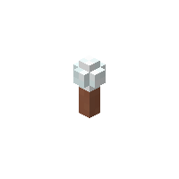
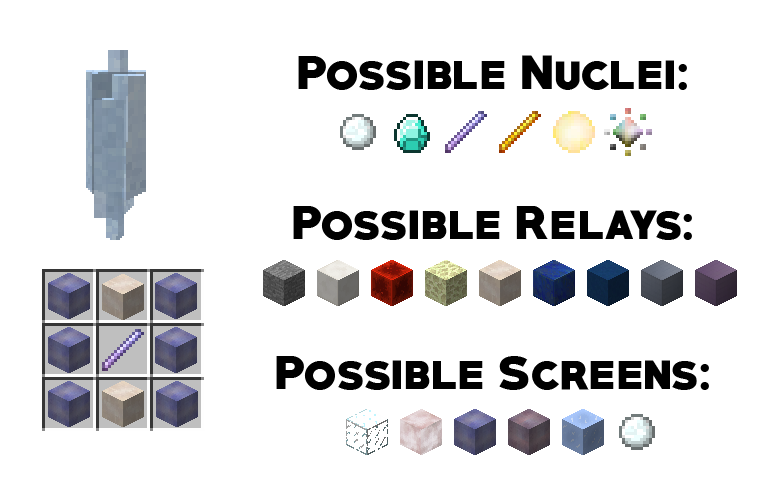
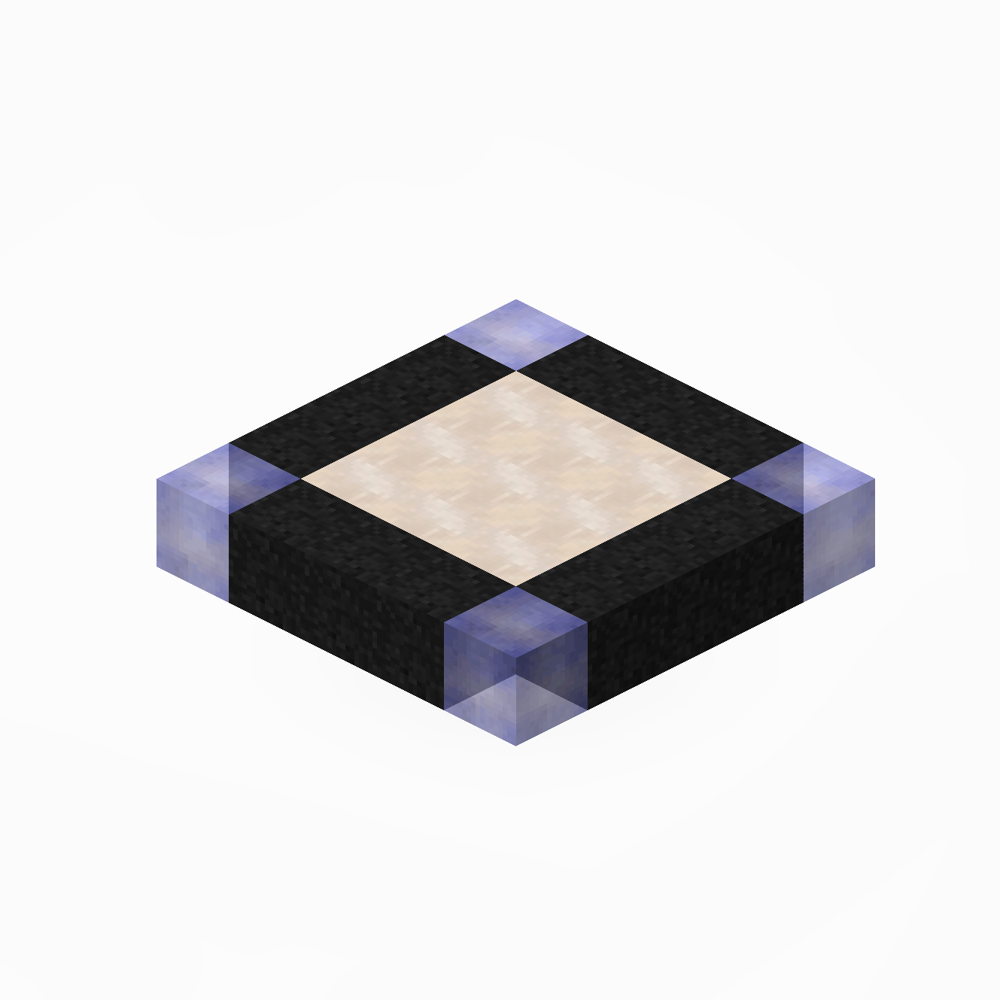
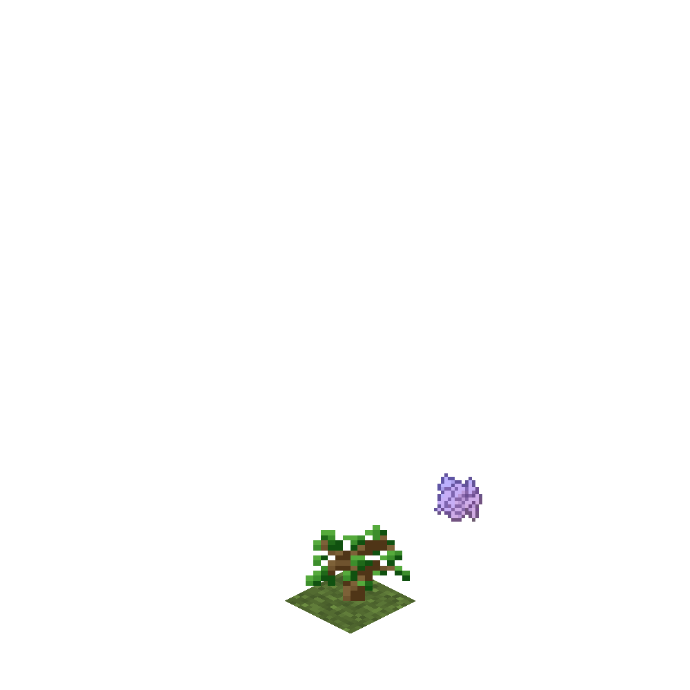
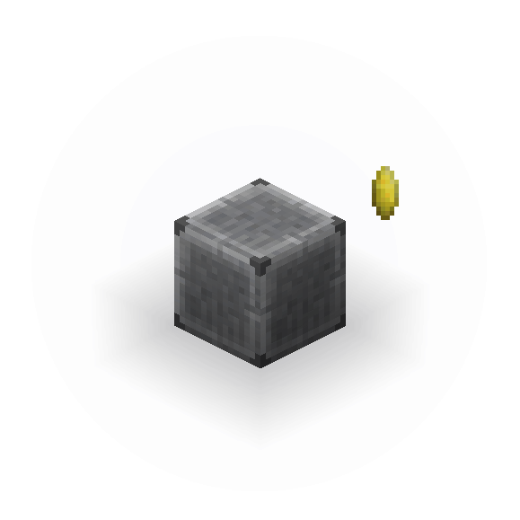
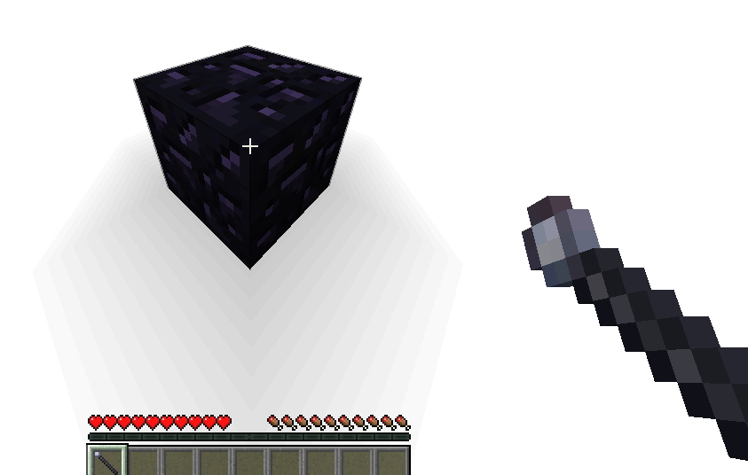
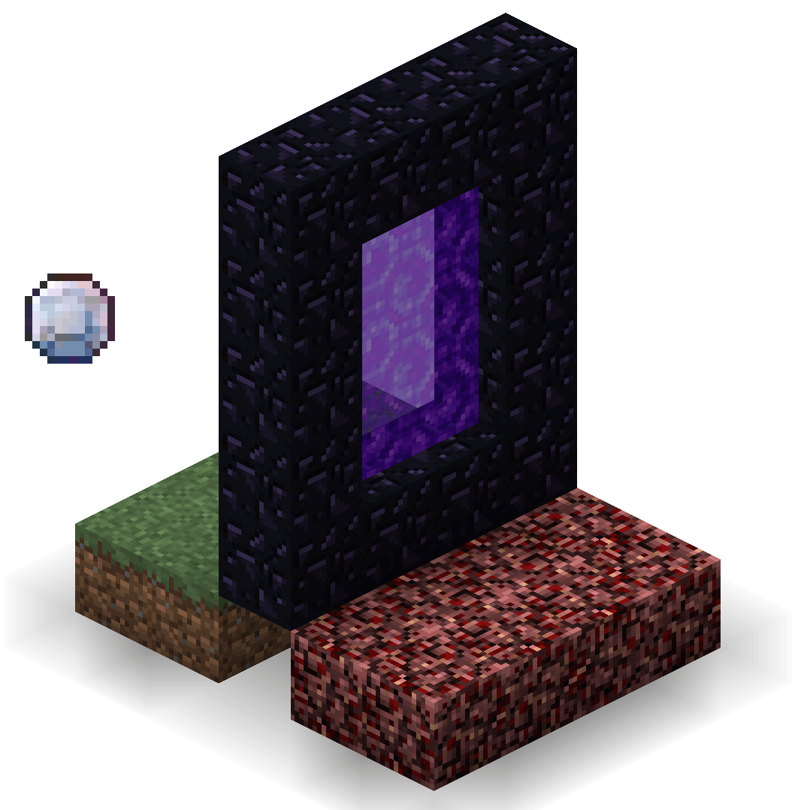
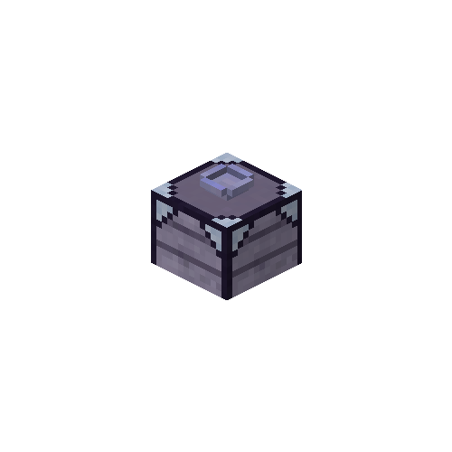

Main Progression
|
You are in a barren, uninhabited, flat stone world? Good. You'll make it yours. |
|||||
|
|
||||
| You are now on your way to get everything you ever wanted. Bellow are some of the most important steps in progressing through the mod. | |||||
|
|
The Amplifying TubeWill turn some objects beneath it into their amplified smelted counterpark. |
The FreezerWill freeze water into snow or ice, and lava into obsidian. |
||
|
 |


The Power CrystalWill provide energy to nearby machines. |
|
|
Power Crystals require 3 parts to craft: the Nucleous, the Relay and the Screen. |
The different parts will change the 3 traits: power, range and purity. - Power simply means more total Power available. - Range is also simply the range at which a Power Crystal can deliver power. - Purity affects power lost by distance. More purity means less power lost when charging a machine from a distance. |
|  | |
The ChargerWill charge Power Crystals that are in it. |
 | |
Crystal ShardsDifferent crystal shards are required for many items throughout the mod |
 |
CoresUse the various shards (that you got from crushing crystals) on the cores to infuse them with that shard element. Then feed the infused core the required materials to transform it into something else. |
 |
DisplacersCraft and use the Obsidian Displacer to get obsidian before having a diamond pickaxe. This lets you build the Nether Portal with no diamonds. |
 |
Nether CrystalObtain them by sending your crystals through the nether portal. |
 |
Shard PickingWhen short on a specific shard, the shard picking table, combined with a specific Shard Picker,
will allow you to get shards directly from Mysterious Dust. |
 |